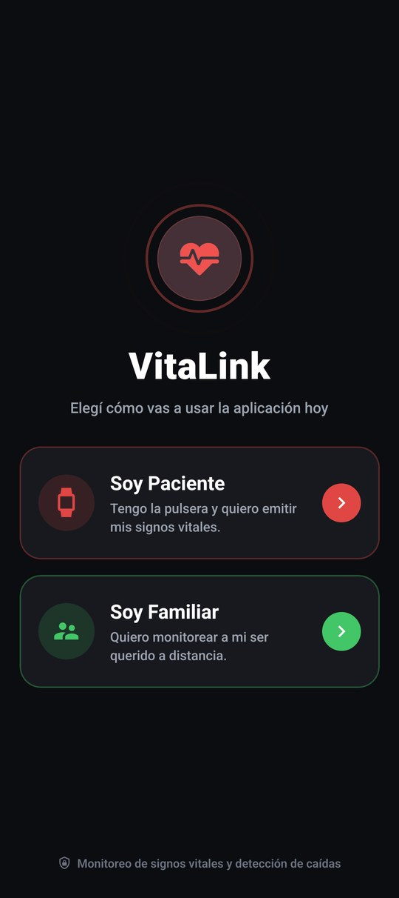
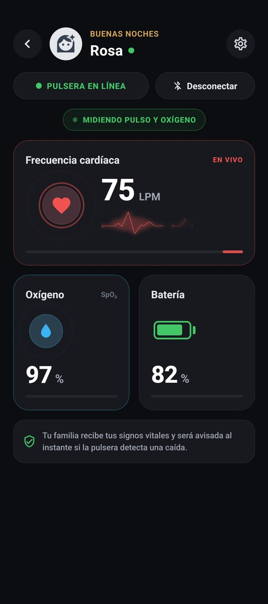
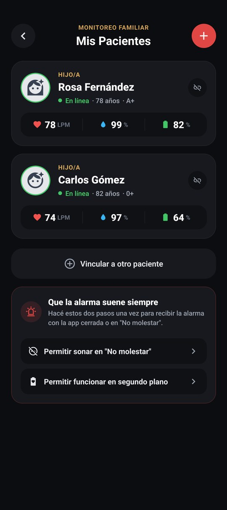
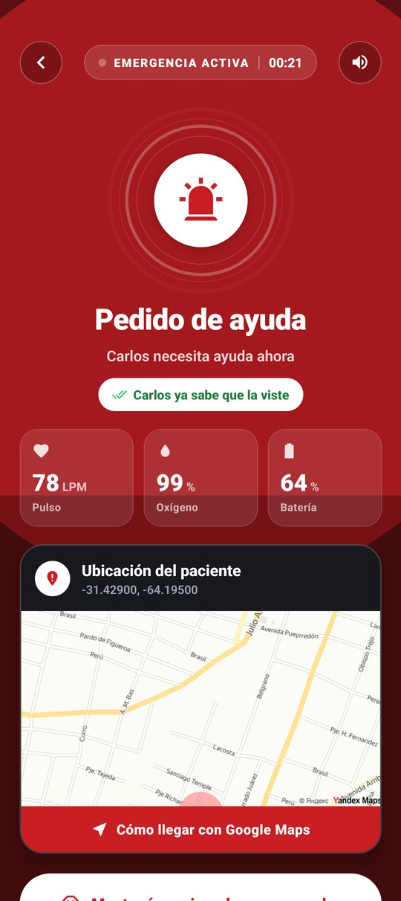

adultos mayores viven solos en Argentina.
Es como llenar
el Estadio Kempes
Y todas viven solas.
Estadio Kempes lleno: 57.000 personas
Cada figura son 1.000 personasCenso INDEC
Nadie lo ve.
Pueden pasar horas.
Y cada minuto cuenta.
Para que ninguna caída
pase desapercibida.
Sin pantallas
Nada que configurar ni aprender.
Tres toques
En esta zona, y pide ayuda.
Vibra para avisar
Así sabe que el aviso salió.
Pulso y oxígeno
Medidos desde abajo, en la muñeca.
sin sacársela.
El cargador se apoya encima y se engancha solo. Mientras carga, puede seguir pidiendo ayuda.
toda la familia.
Para quien la usa
Su pulso, su oxígeno y la batería.
Para la familia
Todos sus seres queridos, en un lugar.
En vivo
Cómo está, en todo momento.
Sigue en su casa
Sin mudarse a un geriátrico ni tener a alguien al lado las 24 horas.
Hace su vida
Sale, cocina y duerme a su ritmo. La pulsera solo actúa si pasa algo.
Y nunca está sola
Si se cae, la familia se entera al instante, aunque no pueda moverse.
Cuidado inteligente para
quienes más querés.

Franco Castillo · Valentín Cerri · Francisco Salatín · Santiago Virgolini7.° año B · Electrónica · ITS Villada · Córdoba